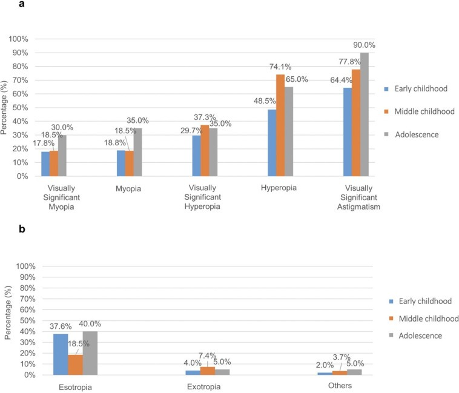
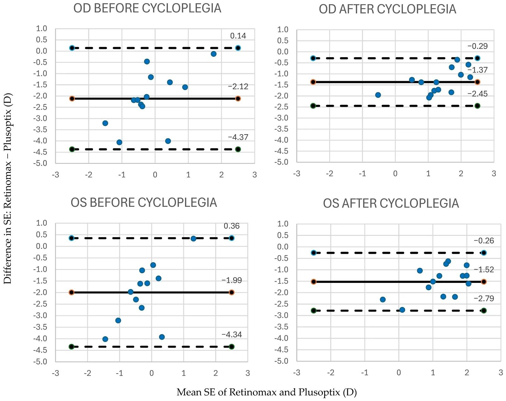
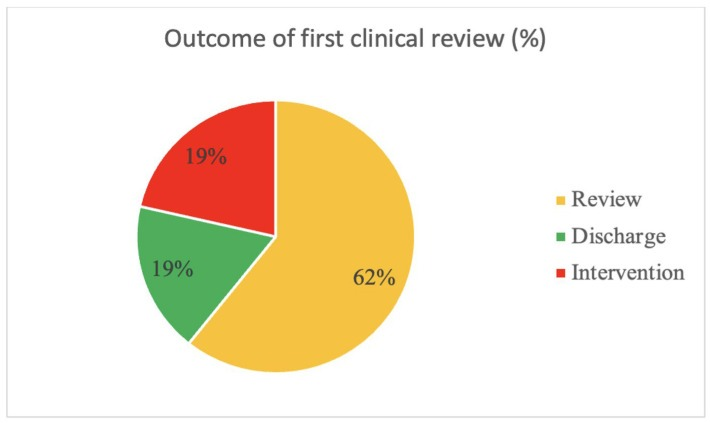

1412 — Đo khúc xạ lý liệt ở trẻ Down syndrome, bại não và tự kỷ: chọn thuốc, kỹ thuật, keratoconus và khi nào gây mê / Cycloplegic refraction in children with Down syndrome, cerebral palsy and autism: agent choice, technique, keratoconus and when to sedate
Tags: pattern:khuc-xa pattern:nhuoc-thi vung:mat protocol:khuc-xa-ly-liet protocol:atropine score:SE incidentaloma:khuc-xa-tre
Mức chắc chắn (certainty): tổng hợp y văn (literature synthesis) — tự biên từ 1 bài thực hành lý liệt ở trẻ (PMC11141127), 1 đoàn hệ 148 trẻ Down syndrome (PMC12094766), 1 chương trình sàng lọc keratoconus 27 trẻ Down (PMC11941047), 1 tổng quan keratoconus ở Down (PMC12764348), 1 nghiên cứu 210 trẻ tự kỷ (PMC12566500), 1 nghiên cứu so sánh hai máy đo ở 23 trẻ tự kỷ (PMC13705275) và 1 đoàn hệ 100 trẻ chậm phát triển (PMC12640464). Chưa gắn một ca nguyên văn đơn lẻ.
Bài này nối tiếp 485 – Khúc xạ lý liệt ở trẻ mầm non (chọn thuốc, kỹ thuật, quy tắc kê kính) và 483 – Sàng lọc thị lực trẻ mầm non (phát hiện). 485 giả định trẻ hợp tác và hợp tác được; bài này trả lời phần còn trống: khi trẻ Down, bại não hoặc tự kỷ thì thuốc nào, đo bằng cách nào, khi nào phải gây mê — và cái gì dễ bị bỏ sót vì "đổ cho khúc xạ".
Câu chốt: Ở trẻ có nhu cầu đặc biệt, khúc xạ sai là quy luật, không phải ngoại lệ: 75,7% trẻ Down có tật khúc xạ có ý nghĩa thị lực (loạn thị 70,3%), 84% trẻ chậm phát triển có tật khúc xạ, 22,3% trẻ tự kỷ có tật khúc xạ — trong khi 23,8% trẻ tự kỷ chưa từng được khám mắt (PMC12094766, PMC12640464, PMC12566500). Nhưng thuốc lý liệt mặc định của trẻ bình thường (cyclopentolate) không phải mặc định ở nhóm này: với Down syndrome hoặc rối loạn hệ thần kinh trung ương, hướng dẫn thực hành khuyên tropicamide 1% là lựa chọn thay thế hợp lý (PMC11141127).
1. Tổng quan bệnh học – cơ chế hình ảnh
- Vì sao phải lý liệt — và vì sao ở nhóm này càng bắt buộc: trẻ 3–6 tuổi có biên độ điều tiết 10–15 D; khi đo không lý liệt, trẻ tự điều tiết để "nhìn cho đúng" → viễn thị bị đo thiếu, cận thị bị đo thừa. Trẻ chậm phát triển/tự kỷ còn có thêm hai lý do: không hiểu yêu cầu "nhìn xa" (nên điều tiết không kiểm soát được) và không phản hồi được với thử kính chủ quan (nên chỉ còn khúc xạ khách quan). Nói cách khác, lý liệt không phải bước tùy chọn mà là điều kiện để có bất kỳ con số nào dùng được.
- Cơ chế thuốc (vật lý – dược lý): lý liệt là đối kháng muscarinic M3 ở cơ thể mi (ciliary muscle) → cơ giãn → dây zinn căng → thủy tinh thể dẹt → điểm xa lùi ra vô cực; đồng thời liệt cơ vòng mống mắt → giãn đồng tử. Cyclopentolate 1%: khởi phát ~30 phút, kéo dài tới 24 giờ. Tropicamide 1%: khởi phát 15–25 phút, yếu hơn và ngắn hơn (1–2 giờ) → dùng được cho phần lớn trẻ lớn, nhưng không đủ khi viễn thị cao, lác, hoặc kết quả không khớp lâm sàng (PMC11141127). Atropine 1%: mạnh nhất, kéo dài nhiều ngày, dùng khi mống mắt rất sẫm và cyclopentolate thất bại.
- Điểm khác biệt của từng nhóm (số liệu định lượng):
- Down syndrome (n = 148, Đài Loan): tật khúc xạ có ý nghĩa thị lực 75,7%; loạn thị 70,3%, viễn thị 31,8%, cận thị 19,6%; thay đổi khúc xạ −0,16 ± 0,65 D/năm, phụ thuộc tuổi và SE ban đầu (PMC12094766). Hình 1 của bài đó cho thấy xu hướng theo tuổi: loạn thị có ý nghĩa 64,4% (nhỏ) → 90,0% (thiếu niên), viễn thị có ý nghĩa 48,5% → 77,8%, cận thị 17,8% → 30,0%.
- Chậm phát triển toàn thể (n = 100, 4 tháng–5 tuổi): tật khúc xạ 84%, viễn thị 78%, loạn thị 45%, cận thị 18%; lác 12%; suy giảm thị lực 66% (PMC12640464).
- Tự kỷ (n = 210, 8,18 ± 4,99 tuổi): tật khúc xạ 22,3% (loạn thị 15,2%, cận thị 5,2%, viễn thị 1,9%), lác 11,9%; 49,5% không hoàn thành được test lập thể; 23,8% chưa từng khám mắt (PMC12566500).
- Keratoconus ở Down: trong chương trình sàng lọc 27 trẻ 9–18 tuổi, 8/54 mắt (15%) đã có keratoconus sớm trên tomography, tuổi chẩn đoán trung bình 14,6; giác mạc mỏng và dốc hơn ngay từ đầu (CCT 479 µm vs 536 µm, Kmax 49,2 D vs 45,8 D) (PMC11941047).
- TẠI SAO máy đo tự động không thay được lý liệt — bằng chứng định lượng: ở 23 trẻ tự kỷ (14 trẻ có cặp đo đủ), Retinomax K-plus 3 cho SE cận thị hơn Plusoptix A09 một cách hệ thống: OD −1,21 ± 1,25 D vs +0,91 ± 0,67 D trước lý liệt; sau tropicamide 1% vẫn lệch (+0,63 ± 0,94 D vs +2,00 ± 0,63 D). Bland–Altman: bias −2,12 D (OD) trước lý liệt, còn −1,37 D sau lý liệt (PMC13705275). Hai máy không thay thế nhau được, và lý liệt chỉ thu hẹp chứ không xóa chênh — nghĩa là luôn phải ghi rõ đo bằng máy nào khi so sánh hai lần khám.
- TẠI SAO keratoconus là "cạm bẫy khúc xạ" ở Down: giác mạc mỏng, dốc, loạn thị không đều → kính cầu–trụ thường quy không cải thiện thị lực, và SE trông "bình thường" trong khi thị lực vẫn kém. Nếu chỉ đo khúc xạ rồi kết luận "đã chỉnh đủ", sẽ bỏ sót keratoconus tiến triển — trong khi cross-linking (CXL) có thể chặn tiến triển nếu phát hiện sớm (PMC12764348, PMC11941047).
2. Mẫu hình + chẩn đoán phân biệt theo nhóm trẻ (gamut)
- G1 — Down syndrome: loạn thị là tật khúc xạ phổ biến nhất (70,3%), kèm viễn thị; keratoconus tuổi thiếu niên; khe mi hẹp, nếp da góc mắt (epicanthus), hẹp lệ đạo (thuốc nhỏ dễ trôi); nhạy cảm với tác dụng toàn thân của atropine (khuyến cáo dùng tropicamide thay thế — PMC11141127). Chốt: luôn soi bóng + ghi cả trục loạn thị, và tomography giác mạc ở tuổi thiếu niên giữa.
- G2 — Bại não (cerebral palsy): viễn thị cao + lác (75,3% lác trong trong đoàn hệ 73 trẻ — PMC13511224); kiểm soát đầu kém, co cứng, dễ co cơ mi khi nhỏ thuốc; thường kèm suy giảm thị giác vỏ (CVI) → thị lực kém dù khúc xạ đã chỉnh đủ.
- G3 — Tự kỷ (ASD): loạn thị và dị khúc xạ nổi bật hơn viễn thị; khó hợp tác, quá tải cảm giác, không đeo kính được nếu gọng không phù hợp; thiết bị sàng lọc cho kết quả khác nhau có hệ thống (mục 1).
- G4 — Chậm phát triển toàn thể không rõ nguyên nhân: tật khúc xạ 84%, thường viễn thị + loạn thị; đây là nhóm hưởng lợi nhiều nhất từ khám mê vì không đo được thị lực.
- G5 — "Hàng giả" phải loại trước khi kê kính:
- Giả lác trong (pseudoesotropia) do epicanthus + sống mũi thấp (rất hay gặp ở Down) → cover test thẳng.
- Giả cận thị (pseudomyopia) do điều tiết → đo lại sau lý liệt.
- Kém thị lực do keratoconus chứ không phải do độ kính → tomography.
- Kém thị lực do CVI ở bại não → khúc xạ đúng vẫn kém; không tăng độ kính vô ích.
- Sai số thiết bị (Retinomax vs Plusoptix, bias tới −2,12 D) → không đổi kết luận chỉ vì đổi máy.
3. Bảng so sánh phân biệt (ma trận đối chiếu)
| Thực thể (entity) | Hình ảnh / dấu hiệu điển hình | Chốt vào (rule-in) | Chốt loại (rule-out) | Gợi ý xác nhận |
|---|---|---|---|---|
| Down syndrome — khúc xạ | Loạn thị (70,3%) + viễn thị (31,8%); khe mi hẹp; epicanthus | Trẻ Down + khúc xạ lý liệt bất thường theo ngưỡng kê kính của bài 485 | Khúc xạ lý liệt trong giới hạn bình thường theo tuổi và thị lực tương xứng | Soi bóng sau lý liệt + ghi trục loạn thị; lặp mỗi 6–12 tháng (biến đổi trung bình −0,16 D/năm) |
| Keratoconus ở Down | Giác mạc mỏng hơn (CCT 479 µm vs 536 µm) + dốc hơn (Kmax 49,2 D vs 45,8 D) so với chứng; loạn thị không đều; thị lực kém không cải thiện với kính | Tomography giác mạc bất thường (BAD-D tăng, Kmax ~49 D, CCT ~479 µm) ở trẻ Down tuổi thiếu niên | Giác mạc dày, loạn thị đều, thị lực cải thiện đủ với kính | Topography/tomography giác mạc; CXL nếu tiến triển |
| Bại não — khúc xạ + CVI | Viễn thị cao, lác trong, kiểm soát đầu kém; thị lực kém không tương xứng khúc xạ | Bại não + viễn thị sau lý liệt + thị lực kém dù đã chỉnh | Thị lực cải thiện đủ sau chỉnh → không phải CVI | Khúc xạ lý liệt + đánh giá chức năng thị giác (fixation, visual behavior) |
| Tự kỷ — khúc xạ | Loạn thị 15,2%, cận thị 5,2%, viễn thị 1,9%; lác 11,9% | ASD + kết quả lý liệt khác kết quả không lý liệt ≥ 1,00 D | Hai lần đo trùng nhau và khớp lâm sàng | Lý liệt + ghi rõ máy đo; không trộn kết quả hai thiết bị |
| Chậm phát triển toàn thể | Viễn thị 78%, loạn thị 45%; không đo được thị lực | Không đo được thị lực + khúc xạ lý liệt bất thường | Đo được thị lực và khúc xạ bình thường → sàng lọc định kỳ | Khám mê khi cần; soi đáy mắt cùng lúc |
| Giả lác trong (epicanthus) | Nếp da góc mắt trong che một phần củng mạc; ánh đồng tử cân xứng | Epicanthus + cover test không lác | Cover test lác thật → không phải giả | Cover–uncover là chốt; Hirschberg chỉ hỗ trợ |
| Giả cận thị do điều tiết | Đo khô −1,00 D, sau lý liệt +0,50 D | Chênh ≥ 1,00 D giữa khô và lý liệt | Chênh < 0,50 D → khúc xạ ổn định | Lặp lý liệt; không kê kính cận từ số đo khô |
| Sai số thiết bị (Retinomax vs Plusoptix) | Lệch hệ thống −2,12 D trước lý liệt, −1,37 D sau lý liệt | Đổi máy mà kết quả lệch > 1,00 D | Cùng máy, cùng điều kiện → không phải sai số thiết bị | Ghi model máy; so sánh bằng soi bóng |

*Panel a: tỉ lệ tật khúc xạ có ý nghĩa thị lực tăng theo tuổi — loạn thị 64,4% (nhỏ) → 90,0% (thiếu niên), viễn thị có ý nghĩa 48,5% → 77,8%, cận thị 17,8% → 30,0%. Panel b: lác trong 37,6% / 18,5% / 40,0% theo ba nhóm tuổi; lác ngoài chỉ 4,0–7,4%. Nguồn: Chen CP et al., PLoS One 2025 (PMC12094766) Fig. 1, CC BY 4.0, giữ nguyên bản.*4. Protocol — chọn thuốc theo nhóm, kỹ thuật và ngưỡng gây mê
4.1 Chuẩn bị (quyết định một nửa thành công)
- Giải thích trước bằng hình ảnh/trò chơi (social story) cho trẻ tự kỷ; không giữ ghì — giữ ghì làm tăng co cơ mi và tăng phản xạ chớp khi nhỏ thuốc.
- Tư thế: trẻ ngồi lòng cha mẹ; đầu tựa vai — giảm lo lắng và cố định nhẹ nhàng.
- Nói "cảm giác lạ", tránh từ "đau/xót" (PMC11141127).
- Down syndrome: kiểm tra hẹp lệ đạo (nếu có, thuốc trôi xuống mũi nhiều hơn) và khe mi hẹp (khó nhỏ thuốc, khó soi bóng).
4.2 Chọn thuốc (bảng quyết định)
| Nhóm trẻ | Thuốc đầu tay | Liều / thời điểm đọc | Vì sao | Lưu ý |
|---|---|---|---|---|
| Trẻ thường ≥ 1 tuổi | Cyclopentolate 1% | 2 giọt cách 5 phút, đọc sau 30 phút | Lý liệt mạnh, thời gian hợp lý | Thêm 1 giọt nếu đồng tử chưa giãn (mống mắt sẫm) |
| Trẻ < 1 tuổi | Cyclopentolate 0,5% | Như trên | Giảm nguy cơ toàn thân | Theo dõi 30 phút sau nhỏ |
| Down syndrome / rối loạn TKTW / nhạy cảm thuốc | Tropicamide 1% | 2 giọt, đọc sau 15–25 phút | Khuyến cáo thực hành thay thế an toàn hơn (PMC11141127) | Không đủ nếu viễn thị cao hoặc lác → cân nhắc cyclopentolate/atropine có theo dõi |
| Mống mắt rất sẫm, cyclopentolate thất bại | Atropine 1% | 2 lần/ngày × 3–4 ngày + 1 giọt ngày khám | Lý liệt mạnh nhất | Độc toàn thân: 1 tuýp mỡ 1% 3 g có thể gây tử vong nếu trẻ nhỏ nuốt phải |
| Trẻ không hợp tác sau 2 lần | Khám/gây mê | Một buổi: khúc xạ lý liệt + soi đáy mắt + tomography | Tránh lặp lại nhiều buổi thất bại | Đánh giá ngưng thở khi ngủ/đường thở trước mê (đặc biệt Down) |
- Ấn điểm lệ (punctal occlusion) 1–2 phút sau mỗi giọt, lau thuốc thừa — đây là biện pháp giảm hấp thu toàn thân quan trọng nhất, rẻ nhất.
- Xác nhận đủ lý liệt: đồng tử ≥ 6 mm và mất phản xạ ánh sáng trực tiếp; nếu sau 15 phút đồng tử chưa giãn ở trẻ mống mắt sẫm → thêm 1 giọt rồi đọc lại (PMC11141127).
4.3 Đo và ghi kết quả
- Soi bóng (retinoscopy) là chuẩn ở nhóm khó hợp tác; autorefractor chỉ là hỗ trợ và phải ghi model.
- Soi bóng ở 2/3 m (0,67 m) → trừ 1,50 D; đo cả hai mắt, ghi cầu, trụ, trục và SE = cầu + ½ trụ.
- Đo loạn thị theo trục (không chỉ ghi "loạn thị") — vì trục quyết định kính đúng, và loạn thị là tật khúc xạ phổ biến nhất ở Down (70,3%); kính sai trục = kém thị lực dai dẳng dù "đã đeo kính".
4.4 Lưu đồ chọn thuốc → đo → gây mê
flowchart TD
A[Trẻ có nhu cầu đặc biệt cần đo khúc xạ] --> B{Down syndrome hoặc rối loạn TKTW hoặc nhạy cảm thuốc?}
B -->|Có| C[Tropicamide 1%: 2 giọt, đọc 15-25 phút]
B -->|Không| D["Cyclopentolate 1% (0,5% nếu dưới 1 tuổi): 2 giọt cách 5 phút, đọc 30 phút"]
C --> E{Đồng tử ≥ 6 mm và mất phản xạ sáng?}
D --> E
E -->|Không| F[Thêm 1 giọt + ấn điểm lệ 1-2 phút, đọc lại 15 phút]
F --> E
E -->|Có| G[Soi bóng cả hai mắt + ghi SE = cầu + ½ trụ]
G --> H{Đo được ở 2 lần khám?}
H -->|Không| I[Khám mê: khúc xạ + đáy mắt + tomography nếu ≥ 10 tuổi]
H -->|Có| J[Kê kính theo ngưỡng bài 485 + hẹn 6-12 tháng]
4.5 Theo dõi và ngưỡng chuyển tuyến
- Down syndrome: khúc xạ lý liệt mỗi 6–12 tháng (biến đổi trung bình −0,16 ± 0,65 D/năm, nhưng phương sai lớn — có trẻ đổi nhanh); tomography giác mạc từ ~10–14 tuổi và ngay nếu thị lực kém không giải thích được (PMC12094766, PMC11941047).
- Tự kỷ: nếu không đeo được kính sau 2 lần thử → chuyển hướng dẫn đeo/gọng thể thao thay vì tăng độ; không đổi số kính để "thuyết phục" trẻ đeo.
- Bại não: khúc xạ đúng + đánh giá CVI; thị lực kém không phải lý do tăng độ.
- Khi nào gây mê: ≥ 2 buổi thất bại, hoặc cần soi đáy mắt + tomography + khúc xạ trong cùng một buổi, hoặc nghi keratoconus ở trẻ không hợp tác. Với Down, đánh giá ngưng thở khi ngủ, bất thường cột sống cổ, tim bẩm sinh trước mê.
5. Biến thể bình thường và cạm bẫy
- Epicanthus + sống mũi thấp (Down) = giả lác trong: đừng gửi mổ lác vì Hirschberg; cover test là chốt.
- Đồng tử không giãn dù đã nhỏ thuốc: ở trẻ mống mắt sẫm cần thêm giọt; ở trẻ Down có thể do khe mi hẹp làm thuốc trôi ra ngoài → nhỏ vào cùng đồ dưới và giữ mi 10–15 giây.
- Nhầm tác dụng kháng muscarinic với dị ứng: sốt, đỏ bừng, nhịp nhanh sau atropine là tác dụng dược lý, không phải dị ứng — nhưng sốt cao, lơ mơ, co giật là ngộ độc, phải xử trí.
- Atropine dạng mỡ: 1 tuýp 1% 3 g có thể gây tử vong nếu trẻ nhỏ nuốt — cất xa tầm tay, không đưa cả tuýp cho gia đình.
- Autorefractor "hai máy hai số": bias −1,37 D vẫn còn sau lý liệt (PMC13705275) → không so sánh hai lần khám khác máy mà không ghi model.
- Kết luận "khúc xạ bình thường nên thị lực kém là do nhận thức": đây là lỗi bỏ sót keratoconus/CVI hay gặp nhất; phải loại trừ bằng tomography trước khi quy kết tâm lý – nhận thức.
- Sàng lọc bằng máy ảnh (photoscreener) thay khám lý liệt: chỉ để phát hiện và chuyển tuyến; không dùng để kê kính — đặc biệt ở nhóm có loạn thị cao, nơi photoscreener bỏ sót nhiều.
6. Tự lượng giá — Blind Quiz ngay trên trang tĩnh
Ca 1 — trẻ Down 14 tuổi, thị lực kém dù "đã đeo đúng số"
- Gợi ý lâm sàng: bé trai 14 tuổi, Down syndrome, đeo kính +2,50 −2,00 × 180 hai mắt; mẹ nói "cháu vẫn dụi mắt, nhìn gần kém".
- Câu hỏi: Nhìn biểu đồ, loại tật khúc xạ nào tăng mạnh nhất ở tuổi thiếu niên? Với bệnh cảnh này, hai bước nào phải làm trước khi tăng độ kính?
Bấm để hiện đáp án (findings + chẩn đoán)
- Findings: panel a cho thấy loạn thị có ý nghĩa thị lực 64,4% (nhỏ) → 90,0% (thiếu niên) — tăng mạnh nhất; viễn thị có ý nghĩa 48,5% → 77,8%; cận thị 17,8% → 30,0%.
- Hai bước trước khi tăng độ: (1) đo lại khúc xạ lý liệt (không dùng số khô) và kiểm tra trục loạn thị; (2) tomography giác mạc — vì 15% mắt trẻ Down 9–18 tuổi đã có keratoconus sớm, với CCT 479 µm và Kmax 49,2 D (PMC11941047).
- Chẩn đoán cần nghĩ: keratoconus trên nền Down — dụi mắt là dấu hiệu hành vi quan trọng; CXL có thể chặn tiến triển.
- Nguồn ảnh: Chen CP et al., PLoS One 2025 (PMC12094766) Fig. 1, CC BY 4.0, giữ nguyên bản.
Ca 2 — hai máy đo cho hai con số khác nhau ở trẻ tự kỷ

- Gợi ý lâm sàng: bé gái 6 tuổi, tự kỷ, không hợp tác soi bóng; phòng khám có Retinomax và Plusoptix. Kết quả: Retinomax −1,50 D, Plusoptix +1,00 D (mắt phải).
- Câu hỏi: Tin máy nào? Bias trung bình là bao nhiêu trước và sau lý liệt? Kết luận thực hành là gì?
Bấm để hiện đáp án (findings + chẩn đoán)
- Findings: Bland–Altman (Retinomax − Plusoptix): OD bias −2,12 D trước lý liệt, −1,37 D sau lý liệt; OS −1,99 D → −1,52 D. Trước lý liệt: Retinomax −1,21 ± 1,25 D vs Plusoptix +0,91 ± 0,67 D; sau tropicamide 1%: +0,63 ± 0,94 D vs +2,00 ± 0,63 D.
- Kết luận: không tin tuyệt đối máy nào; lý liệt làm giảm nhưng không xóa chênh → phải soi bóng (hoặc khám mê) khi hai máy lệch > 1,00 D, và luôn ghi model máy trong hồ sơ.
- Chẩn đoán: sai số thiết bị + điều tiết tồn dư, không phải "trẻ tự kỷ khó đo nên số nào cũng được".
- Nguồn ảnh: Modrzejewska M et al., J Clin Med 2026 (PMC13705275) Fig. 1, CC BY 4.0, giữ nguyên bản.
Ca 3 — chương trình sàng lọc keratoconus ở trẻ Down

- Gợi ý lâm sàng: phòng khám mở buổi sàng lọc keratoconus cho 27 trẻ Down 9–18 tuổi.
- Câu hỏi: Nhìn biểu đồ, bao nhiêu phần trăm phải can thiệp ngay ở buổi đầu? Con số đó nói gì về ngưỡng tuổi sàng lọc?
Bấm để hiện đáp án (findings + chẩn đoán)
- Findings: 19% can thiệp, 62% hẹn theo dõi, 19% cho ra ở buổi khám đầu; tương ứng 8/54 mắt (15%) có keratoconus sớm trên tomography, tuổi chẩn đoán trung bình 14,6.
- Ngưỡng tuổi: nhóm tác giả khuyến nghị sàng lọc tomography ở tuổi thiếu niên giữa (mid-teens) cho mọi trẻ Down, vì 15% đã có tổn thương cần CXL ngay lần đầu.
- Vì sao quan trọng: CXL chặn tiến triển; bỏ sót = mờ giác mạc + ghép giác mạc với nguy cơ cao hơn ở Down (dụi mắt, nhiễm trùng, tuân thủ kém).
- Nguồn ảnh: Power B et al., Diagnostics (Basel) 2025 (PMC11941047) Fig. 1, CC BY 4.0, giữ nguyên bản.
Bài liên quan chéo
- 485 – Khúc xạ lý liệt điều tiết ở trẻ mầm non (chọn thuốc, quy tắc kê kính viễn thị)
- 483 – Sàng lọc thị lực trẻ mầm non (phát hiện và chuyển tuyến)
- 450 – Mắt nhi: ROP, Coats, PHPV (bệnh võng mạc nhi)
- 1405 – Lác ngoài thứ phát sau mổ lác trong (nhóm bại não, theo dõi dài hạn)
- 497 – Theo dõi sau cấy ốc tai ở trẻ (trẻ có nhu cầu đặc biệt, phối hợp chuyên khoa)
Ảnh
- Ảnh lấy từ Europe PMC/PMC (bản open access, CC BY 4.0), giữ nguyên bản, không crop/ghép.
- Tên file:
1412_khuc-xa-ly-liet_<nội dung>_PMC<ID>-Fig<k>.jpg; nguồn – giấy phép từng file trongimages/CREDITS.md.
Không dùng để chẩn đoán độc lập khi chưa có người hướng dẫn.